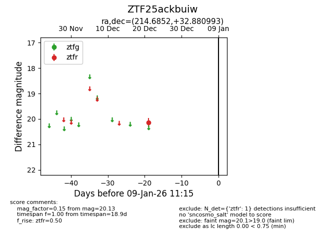
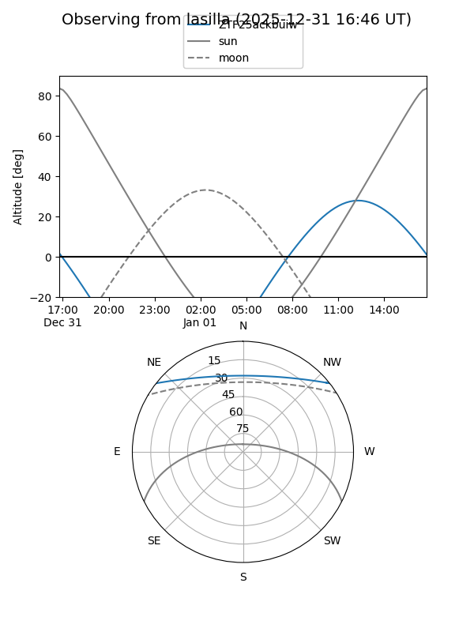
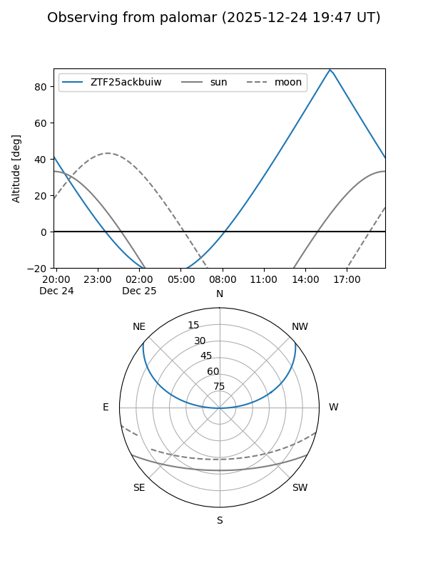

ZTF25ackbuiw
Target ZTF25ackbuiw at 2025-12-31 17:00
Aliases and brokers:
FINK:
Lasair:
ALeRCE:
alt names
ZTF25ackbuiw (ztf,fink_ztf)
Coordinates:
equatorial (ra, dec) = 214.6852,+32.88099
equatorial (HMS+DMS) = 14:18:44.44,+32:52:51.57
galactic (l, b) = (55.1741,+70.28608)
Flags:
Photometry:
last ztfr=20.13
1 ztfr detections
Lightcurve

Visibility


Additional plots